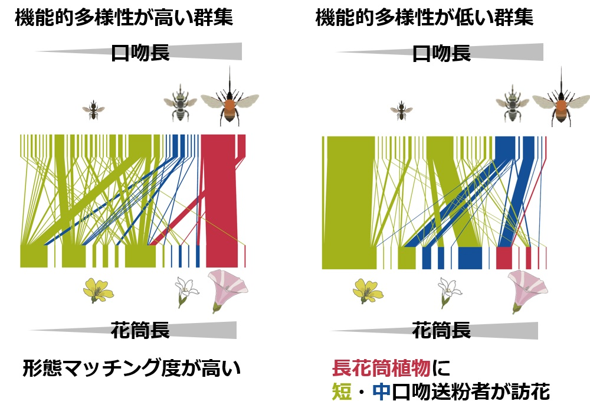
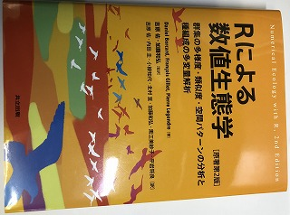

Masayoshi K. Hiraiwa's Website


平岩 将良 近畿大学農学部（東邦大学 → 神戸大学 → 農研機構 → 近畿大学）
生態系は多様な生物種が複雑に相互作用することで成り立っています。私は実際に野外から得られたデータを解析することで、人間活動や気候変動が生物多様性や種間相互作用、生態系機能に与える影響やそのメカニズム解明を目指して研究を行っています。また、多大な労力を要する生物群集の調査を効率化するため、深層学習を用いた生物の自動検出技術の開発についても取組んでいます。
主な研究テーマ
- 人間活動や気候変動が生物多様性に与える影響（群集生態学的解析・外来種の分布拡大シミュレーション）
- 生物多様性の変化が生物間相互作用に与える影響評価（ネットワーク解析・花形質の進化・作物の収量に与える影響評価）
- 野外調査の省力化（深層学習を用いた生物画像の自動検出および個体数推定）
キーワード：送粉生態学・群集生態学・島嶼生態学・送粉ネットワーク・生物多様性・機能的多様性・深層学習
News & Recent Publications
2024年2月18日 — 送粉ネットワークの論文が掲載されました
丑丸敦史さんとの共同研究「Loss of functional diversity rather than species diversity of pollinators decreases community-wide trait matching and pollination function」がFunctional Ecologyに掲載されました。マルハナバチ類やチョウ類など長い口吻を持つ送粉者の減少（機能的多様性の減少）はネットワークレベルの花と送粉者の形態のミスマッチを引き起こし、その結果、植物群集全体の送粉成功を低下させることを明らかにした研究です。
・本文はこちら（AbstractのJAボタンを押すと日本語の要約が読めます）・Functional Ecologyのブログ紹介（日本語の記事）

2023年2月27日 — 「Rによる数値生態学」が出版されました
私が翻訳に関わった本「Rによる数値生態学」が出版されました。群集生態学でよく使われる序列化や多様度などを計算するRコードが載っている実用的な本になっています。
・詳細はこちら
生態学会神戸大会で研究発表を行います
2019年2月21日 — シンポジウム「ネットワークが切り拓く生態学の最前線」にて「送粉ネットワークのジェネラリスト化による送粉機能への影響ー都市と島の生態系を例に」というタイトルで発表を行います（3月19日9:30-12:30 Room B）。是非お越しください！
・要旨はこちらEcology誌に論文が掲載されました
2019年2月21日 — 末次健司さんらとの共同研究「Thrips as a supplementary pollinator in an orchid with granular pollinia: is this mutualism?」がEcologyのThe Scientific Naturalistに掲載されました。ハナアブが主要な送粉者であるカキランにおいてアザミウマが補助的な送粉者として機能しているのか調べた研究です。
・本文はこちら新年度になりました
2018年4月1日 — 新年度になりました！今年度もよろしくお願いいたします！源研究室（環境DNAなどを研究）にも所属することになりました。源研究室の皆さまよろしくお願いいたします！
第65回生態学会でポスター賞優秀賞
2018年3月18日 — 共同研究をしている角屋真澄さん(富山大)が第65回生態学会でポスター賞優秀賞を受賞しました。
「虫媒花における、花色と形態の相関進化ー送粉者相の異なる地域間の比較ー」
*角屋真澄，辻本翔平，久保田将裕，渡邉裕人，伏黒陽大，平岩将良，丑丸敦史，工藤岳，石井博
三宅島での研究成果がJournal of Asia-Pacific Entomologyに掲載
2017年7月26日 — 吉川徹朗さん、岸茂樹さん、櫻なささん、加藤和弘さんとの共同研究「Interaction between insects and insect-pollinated plants on Miyake Island after a recent volcanic eruption: A comparison between vegetation types」がJournal of Asia-Pacific Entomologyに掲載されました。
・本文はこちら第64回生態学会でポスター賞優秀賞
2017年3月15日 — 共同研究をしている清水健将さんが第64回生態学会でポスター賞優秀賞を受賞しました。
「都市化による機能群多様性の減少が植物‐送粉者ネットワークに与える影響」
*清水健将, 平岩将良, 丑丸敦史(神戸大・人間発達環境)
新しい論文がProceedings of the Royal Society Bに掲載されました
2017年1月13日 — 丑丸敦史さんとの共同研究「Low functional diversity promotes niche changes in natural island pollinator communities.」がProceedings of the Royal Society Bに掲載されました。近年進行するマルハナバチなどの長口吻送粉者の減少が植物に与える影響評価を伊豆諸島の群集を用いて行った研究です。
・本文はこちら・日本語の要約はこちら
ウェブサイトを開設しました
2016年12月26日 — ウェブサイトを開設しました。よろしくお願いします。